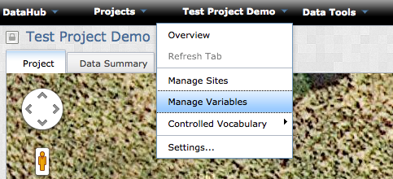
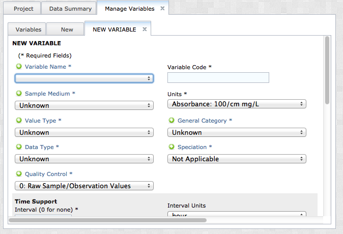
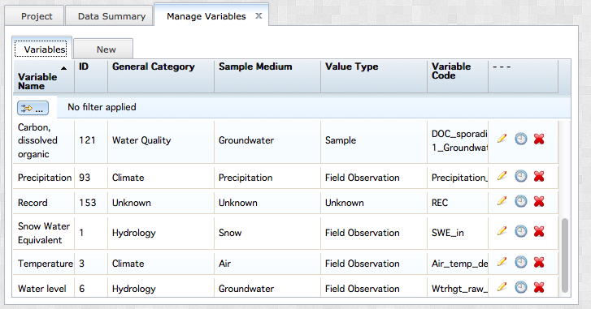
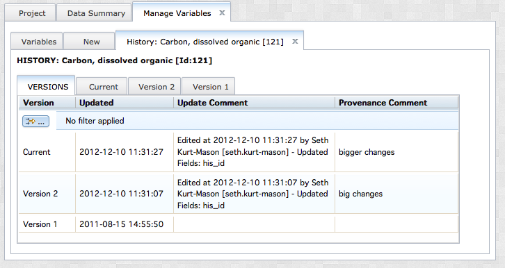

To begin managing variables for your project, navigate to the Variable management interface by selecting 'Manage Controlled Vocabulary' from the Project_Name dropdown menu.

If you are creating a new project, you will notice that the list in the 'Variables' tab is empty. Create a new variable by clicking the 'New' tab. This will open a new tab displaying dropdowns and text boxes for describing metadata fields. All fields marked with an astericks (*) are required fields. All others are optional. The 'Variable Code' is a unique identifier that will help you to find this variable during the data upload process. This value may not be duplicated for any two variables in your project.

More information about each of these fields may be found in the ODM documentation here. It is strongly recommended that users review this documentation. Several fields used in VOEIS are not used in the ODM, including the following:
See the table below for a description of the appropriate use of each in VOEIS:
Laboratory |
Identifying information for tracking the laboratory responsible for analyzing samples and producing the data loaded to VOEIS |
Lab Method |
The particular analytical method used by the laboratory to analyze samples |
Field Method |
The particular method used in the field to collect samples |
Logger Type |
The type of automated data logging device used to record data autonomously in the field |
Logger ID |
The serial number or other identifying information for tracking which data logging device was used to store data in the field |
Sensor Type |
The type of sensor used in the field to collect data. This may be a handheld instrument or a probe that is connected to a data logging device |
Sensor ID |
The serial number or other identifying information for tracking which sensor or probe was used to generate field data |
Detection Limit |
The method detection limit of the method (field or lab) used to generate the data. |
When you complete the 'New Variable' form, click the 'Save Variable' button on the bottom of the form. Repeat this process to define multiple variables for your project. Return to the 'Variables' tab to review the variables you create. If you do not see your variables here, select 'Refresh Tab' from the Project_Name dropdown menu.

Explore the list by scrolling down through the availalbe terms. Another option for sorting the list is to apply custom filters. To do this, click the small button with the yellow arrow located in the upper left. This button calls the pop-out window below. Custom filtering rules are described using Boolean logic and applied to either a single column or multiple columns.

Return to the variables grid. The right column of the grid contains four icons. The pencil icon opens a tab for editing the variable. Any edits are saved as versions, which in turn can be previewed by clicking the clock icon.

Review the versions by clicking on the various Version tabs. You can rollback to any previous version of a variable at any time by selecting the "Rollback Version" button from the Version tab. These changes will be applied to all data stored in VOEIS using this variable. You may remove a variable from appearing in your project by clicking the red 'X' in the grid in the 'Variables' tab. This action will only hide the variable from view in the user interface to preserve any data relationships that may exist for any particular varialbe. Regardless, remove variables with caution. This aciton cannot currently be reversed in the user interface and may complicate management of data stored in VOEIS using the selected variable.
Once you have described variables for use in your project, you are ready to begin storing data.
Created with the Personal Edition of HelpNDoc: Easy CHM and documentation editor